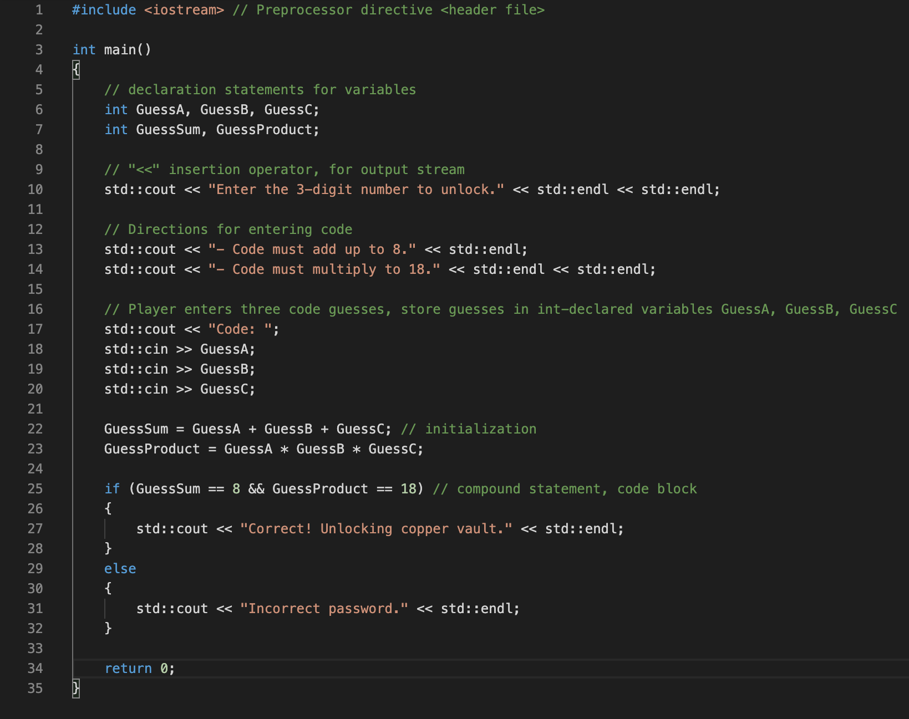
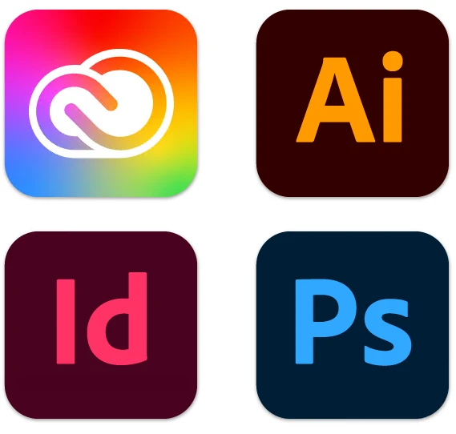

Bonjour et salutations! Bienvenue sur ma merveilleuse page. Vous trouverez ici quelqu’un des projets que j’ai eu la chance de travailler dessus, ainsi que les compétences que je possède afin de réaliser ces projets.
Portfolio
Compétences
C++
Avec une grande maîtrise du langage C++ à ma disposition, peu est hors de ma portée en programmation.
HTML
Comme vous le voyez, mes talents en design web sont indiscutablement de niveaux professionnels.
Suite Adobe
Mon savoir-faire avec Photoshop, InDesign et Illustrator est sans égal dans l’industrie
Moi?
Que dire a propos de moi? Je suis un jeune étudiant du Cégep du Vieux Montréal qui, remplit d'espoire et de détermination, rêve d'un jour faire plein d'argent. Avec mes années d'expérience sur le marché du travail, je possède un avantage sur mes pairs que seul des années de travail peuvent apporter.